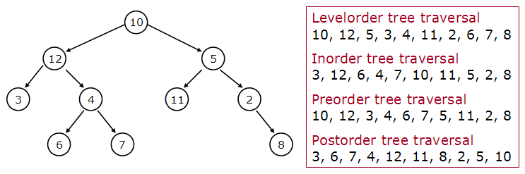
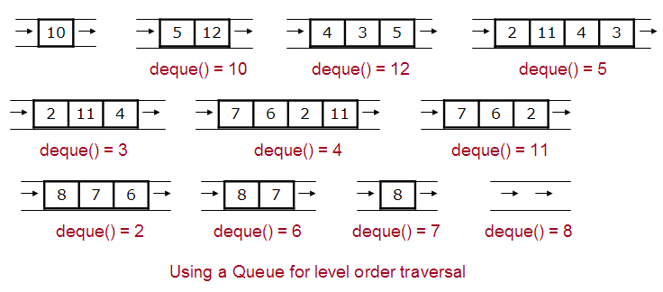

Tree traversal
Tree traversal is the process of visiting each node in a tree.By "visit" we mean performing an action, e.g. updating or doing a calculation.
A tree consists of a root with pointers to subtrees. This recursive structure makes it easy to traverse a tree recursively.

Tree traversal. Source: cs-people.bu.edu/tvashwin

Level-order traversal. Source: cs-people.bu.edu/tvashwin
Traversal methods
The order in which we visit the nodes depends on the traversal method. Trees are usually traversed from left to right.- Pre-order
- Visit the root.
- Traverse the subtrees.
- Post-order
- Traverse the subtrees.
- Visit the root.
- In-order (binary trees)
- Traverse the left subtree.
- Visit the root.
- Traverse the right subtree.
- Level-order
- Visit all nodes at depth d before visiting nodes at depth d + 1.
Level-order is a breadth-first traversal, and can be implemented with a queue.
Traversal implementation
Sample codeTraversableTree
A simple tree class with an add method and 4 traversal methods.
Level-order traversal algorithm
add root to an empty queue
while the queue is not empty:
remove the front node, visit it, and add its children to the queue
Example uses
- Pre-order traversal may be used to copy a tree.
- Post-order traversal may be used to calculate disk space, because you calculate the space of sub-directories before parent directories.
- In-order traversal may be used to visit the nodes of a binary search tree in sorted order.
- Level-order traversal may be used to find the path with the fewest edges between two nodes in a graph.